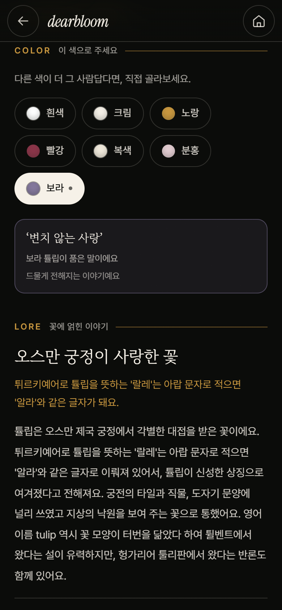
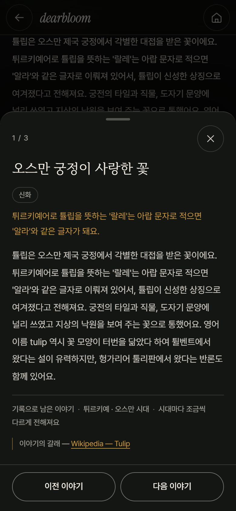
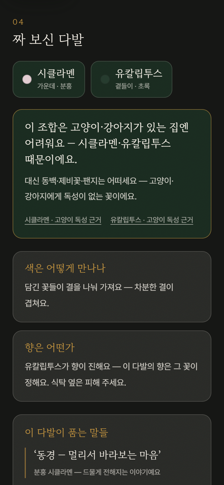
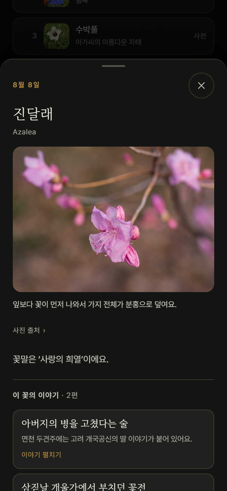

AI 구조·프로토타입
AI는 사용자의 이야기를 이해하고,
데이터로 꽃말과 안전을 확인합니다
아래 네 화면은 지금 직접 눌러 볼 수 있습니다. 이 밖에도 여러 명에게 각각 추천하기, 단체 부케, 비밀 편지, 카드 문구 고치기, 구매처 찾기가 함께 돌아갑니다.

05색이 바뀌면 뜻도 바뀝니다

06이야기에는 출처를 답니다

07직접 짜 보는 꽃다발

08366일 탄생화 사전
결과 화면의 반려동물 표기
크게 위험한 꽃은 추천 전 제외

AI가 하는 일
자유 문장 이해하기
취향·추억 단서 찾기
메시지 다듬기
검증 데이터·엔진
꽃말·출처 확인
반려동물 안전성 판단
위험 꽃 강제 제외
가벼운 주의는 함께 표기
반드시 지키는 것
출처 없는 꽃말은 만들지 않음
추억·편지 원문은 저장하지 않음
정적 데모 고지
공모전용 Netlify 데모는 서버 없이 동작합니다. 추천·안전·꽃말·이야기는 실제 엔진과 데이터를 그대로 쓰고,
카드 문구만 API 키를 감추려고 미리 검토한 예문으로 대신합니다. 정식 배포에서는 서버가 AI 메시지를 직접 만듭니다.
이 차이는 숨기지 않고 화면에 그대로 밝힙니다.
AI 구조·프로토타입
04/05